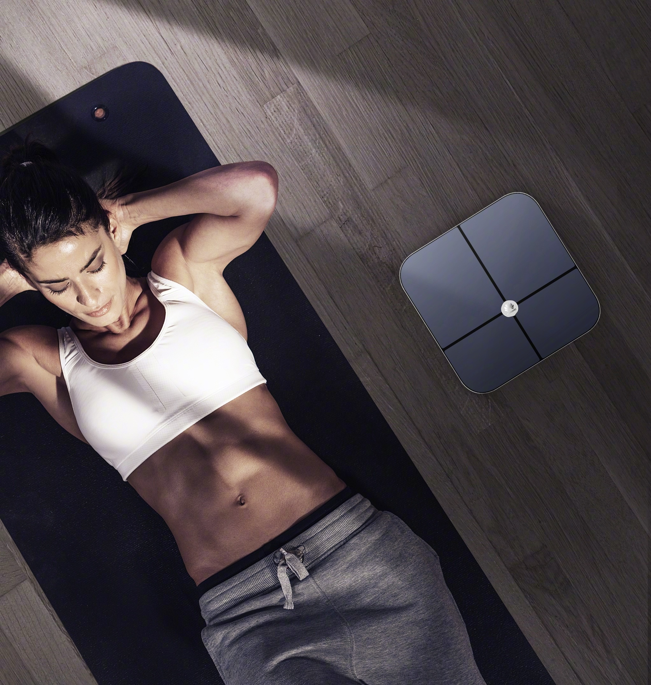
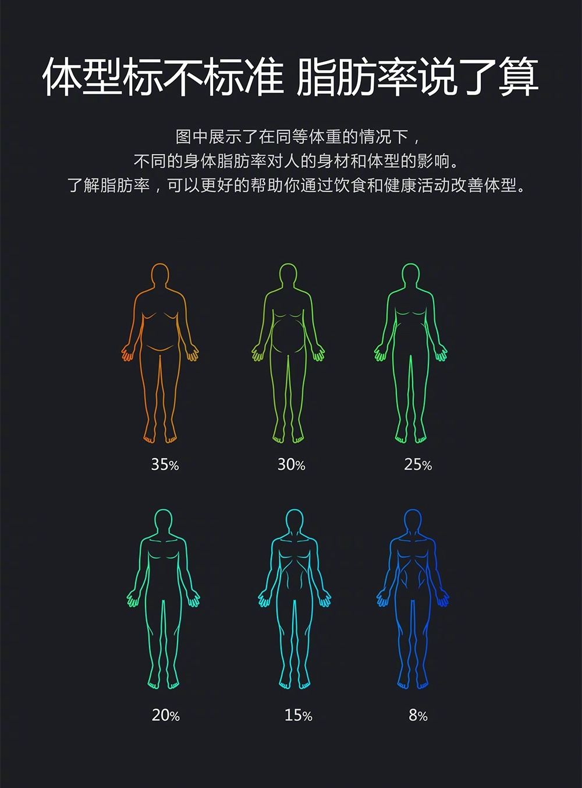

减脂的人群往往对于体重的变化非常敏感，体重秤上的数字就像是晴雨表的天气，因为体重的增减欢喜或忧愁。但是光看体重的数字是没有意义的，毕竟我们努力训练的结果并不是为了体重的合适，关键还在于身材的呈现。今天就给大家讲讲如何更科学的减脂，避免冬日运动误区。
对于减肥人士而言，是不是只要体重不断减少就可以了呢？
NO！减重不等于减脂
体重的下降虽然可以使身体脂肪率下降，在大幅度的体重下降后，身材看上去也会有视觉上明显的变化，但是事实上影响人胖瘦的最大的因素是身体脂肪含量的多少。
体重相同的人，不同的体脂率在身体上的表现也不同。相同质量下，肌肉和脂肪的体积比大概是1：1.4。这就是很多女生都会困惑的：“为什么我和她明明身高、体重都相同，而在视觉效果上却有5-10斤的差异？”
所以减肥，我们要减的是体脂，体重影响意义不大。
减肥的本质是身体在进行分解代谢，是一个把身体里的能量不断拿出去的过程，简单来说，就是在一段时间内，让身体消耗量大于摄入量。
虽然进行任何的运动都会有能量消耗，但在运动动作上选择能量消耗大的训练动作更为有效。减脂的动作更加推荐站立位的复合动作训练，比如深蹲、六角杠铃硬拉、TRX划船、波比跳、甩绳等。或者四点支撑位的训练，比如俯卧撑、猫爬等。同时，具有位移性的训练动作往往也能达到不错的减脂效果，如：冲刺跑、箭步蹲等。
从方法上看，高强度的间歇训练（HIIT）是目前许多商业健身机构的主流减脂方法。
HIIT的全名是High-intensity Interval Training (HIIT)高强度间歇训练法，重点是高强度，以及在还未完全恢复体力时就开始下一组动作的练习。其实Insantity和Tabata是HIIT的两种不同形式。
简单地说，就是停停歇歇的高强度运动。这其实是一种无氧运动，所以并不是说只有有氧训练才能减脂，无氧运动一样能减脂。同样时间内，减脂效率最高的运动恰恰是HIIT(高强度无氧间歇运动)！
HIIT一般是多个动作的组合，大家可以从训练动作中挑选组合，动作的数量以及间歇时间可以根据自己的体能来安排，但尽量不要超过休息一分钟。这里推荐一些动作给大家，如六角杠铃硬拉，TRX划船，波比跳，甩绳等。
因为只做有氧练不出线条感的身材，只能成为“纸片人”，而翘臀、前凸后翘的身材往往都是靠力量训练练出来的。所以可以看到越来越多的女生开始练器械，在重量上的成绩也是越来越惊人。
像是力量训练中的深蹲、硬拉等动作可以帮助强化臀部线条，提高臀部位置，练出翘臀，让身材变得紧实凹凸有致，这是建议在减脂过程中加入力量训练的原因之一。
另外，加入力量训练，可以提高身体的肌肉含量，提高身体运动表现，同时还能增加小部分的基础代谢。所以力量训练与有氧训练结合，能够更快实现减脂的目的。这也是建议在减脂过程中加入力量训练的原因之二。
减脂的饮食也是许多人特别在意的话题。“管住嘴，迈开腿”是许多人津津乐道的话题，那么要做些什么才能管住嘴呢？
简单来说，我们需要做到两点，一是控制热量摄入，二是保证碳水化合物、蛋白质、脂肪的饮食均衡。热量的控制主要靠卡路里的计算，这已经被大家所熟知。但还需要额外强调的是营养素的均衡摄入。这里就要简单说一下日常生活中常见的三种营养素：碳水化合物、蛋白质和脂肪。
碳水化合物的来源主要是米饭、蔬菜、水果、饮料、甜点、糖类等物质，碳水化合物能为我们提供直接的能量来源。蛋白质的来源主要是肉类、蛋类、奶类、豆类等，它是肌肉的基本物质来源，缺乏蛋白质会让我们难以维持肌肉；脂肪则来源于植物脂肪（植物油），动物脂肪（动物油），日常生活中的糕点类食品、膨化食品中含有大量的脂肪。如果一名减脂者只用苹果作为基础饮食来减脂，这就只摄入了碳水化合物，未能摄入蛋白质和脂肪，没有做到膳食均衡，必然较难持久，容易遇到反弹。
根据中国营养协会发布的《中国居民膳食指南》，中国人的碳水化合物能量摄入应占每日的50％-60％，蛋白质应占能量摄入的10-15％，脂肪摄入应占20-30％。作为减脂者，不仅应当进食碳水化合物，蛋白质的进食也是必不可少的。
减脂期间的饮食尽量保证以下的原则：
1、请保证三餐主食的摄入。
2、注意保证蛋白质的摄入。注重肉类、蛋奶类、豆制品、坚果类食物的摄入。
3、正常摄入米饭、面条这类细粮类的碳水化合物。也同时多考虑玉米、高粱、燕麦这类粗粮碳水化合物。粗粮不像米饭、面条这类细粮，它们属于慢速消化的碳水化合物(低GI)，所以不会像细粮那样被快速吸收造成血糖波动幅度过大，较小的血糖波动是有利于减脂的。但如果你无法用粗粮作为正餐主食，正常食用米饭或者面食也可以，不必纠结。请务必保证主食的摄入。
4、炸煎炒类食物少吃，尽量选择蒸煮类食物。
5、尽量不摄入额外的零食、饮料，薯片什么的能不吃就不吃。
6、有条件的，请考虑少食多餐。在早餐和午餐之间、午餐和晚餐之间增加少量饮食摄入，将中餐和晚餐的量，分散到其他两餐中。所谓的加餐并不需要吃太多的东西，一杯牛奶、一个苹果、一根玉米，都是简单的加餐，它的作用是提高你的饱腹感和增加你的基础代谢、以及保持你的血糖稳定。